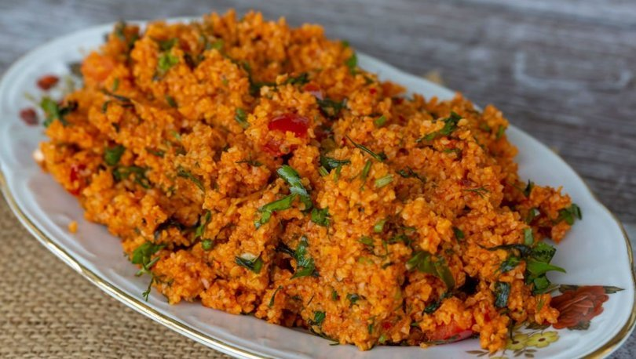

Kısır!

Malzemeler:
- 6 çay bardağı kısırlık bulgur (köftelik bulgur)
- 5 su bardağı sıcak su
- 1 yemek kaşığı tepeleme biber salçası
- 1 yemek kaşığı domates salçası
- domates
- 1 demet maydanoz
- 6 dal yeşil soğan
- 6-7 yaprak taze nane
- 7-8 yaprak marul
- 1 tatlı kaşığı karabiber
- 1 tatlı kaşığı tuz
- limon suyu
- nar ekşisi
- zeytin yağı
Nasıl Yapılır?
- 6 çay bardağı kısırlık bulgur derince bir kaba alınır.
- Üzerine 1 tepeleme yemek kaşığı biber salçası eklenerek
kaşığın arkasıyla salça bulgura yedirilir. 1 yemek kaşığı domates
salçası eklenerek aynı şekilde karıştırılır.
- Üzerine 5 su bardağı kadar sıcak su dökülerek
üzerine kapak kapatılır ve yumuşamaya bırakılır.
- Suyu çekip yumuşayan bulgura doğradığımız
maydanoz, yeşil soğan, taze nane ve marul eklenir.
- Yazın küçük küçük doğrayarak domates de ekleyebilirsiniz.
- Kısırı karıştırdıktan sonra 1 tatlı kaşığı karabiber,
1 tatlı kaşığı tuz, yarım çay bardağı nar ekşisi, 1 limon suyu,
varsa biraz kimyon eklenebilir,
yarım çay bardağı zeytinyağını da eklenerek iyice karıştırılır.
- Kısır servis tabağına alınır.
İsteğe göre turşu, salatalık, domates ile süsleyebilirsiniz.
Afiyet Olsun!
geri